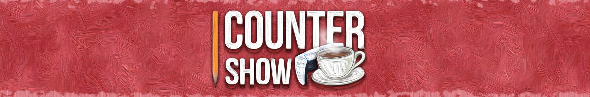

ДИКТОР · АКТОР ДУБЛЯЖУ
Антон
Зайковський
Голос, що дає історії характер.
Озвучую рекламу, відео, презентації та персонажів у різноманітних проєктах
Мій голос.
Демо · Антон Зайковський
Не вдалося відтворити аудіо. Послухати на Google Drive
ПОРТФОЛІО
Свіжі роботи
Добірки робіт за напрямами
Більше варіантів робіт
ПРО МЕНЕ
За голосом —
увага до історії.
Я Антон — диктор, актор дубляжу
та автор YouTube-каналу CounterShow.
Працюю з рекламою, відео, мультфільмами та іграми. Шукаю для кожної роботи свою інтонацію: від спокійної розповіді до емоційного діалогу персонажів.
Працюю з українським та англомовним озвученням. Також займаюся обробкою аудіо й відеомонтажем — розумію, як голос звучатиме в готовому проєкті.
Більше про мій досвід у LinkedInМІЙ АВТОРСЬКИЙ ПРОЄКТ
CounterShow
Той самий голос.
Ще більше історій.
Ігрові новини, огляди та глибокі розбори українською. Мій простір для авторських сценаріїв, озвучення й монтажу — і ще один спосіб почути мене в роботі.
Дивитися на YouTube
МАЄТЕ ПРОЄКТ ЧИ ІДЕЮ?
Дамо їй голос.
Написати в TelegramРозкажіть про них, формат і терміни — почнімо знайомство.